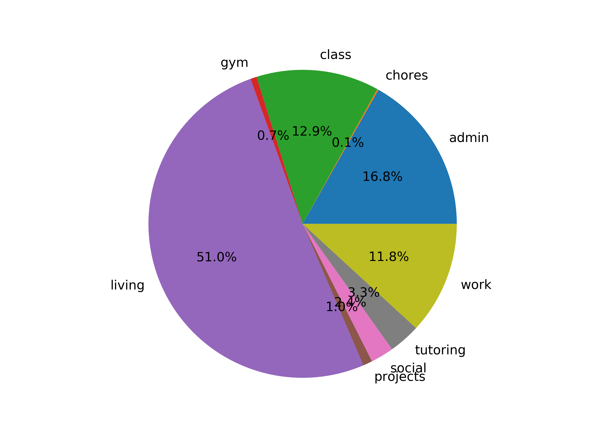

i put everything into my calendar, from doing the dishes to take the tube. this is an experiment to create an auto-updating chart of how my logged time is spent. what i learned is that self-reported data is heavily skewed... i am thinking about ways to improve this simple script by pulling data from other sources, perhaps using geolocation.
code here.
